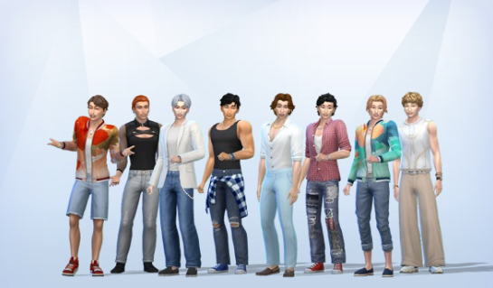
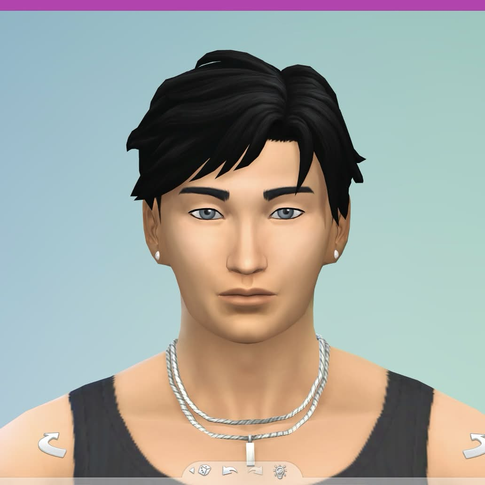
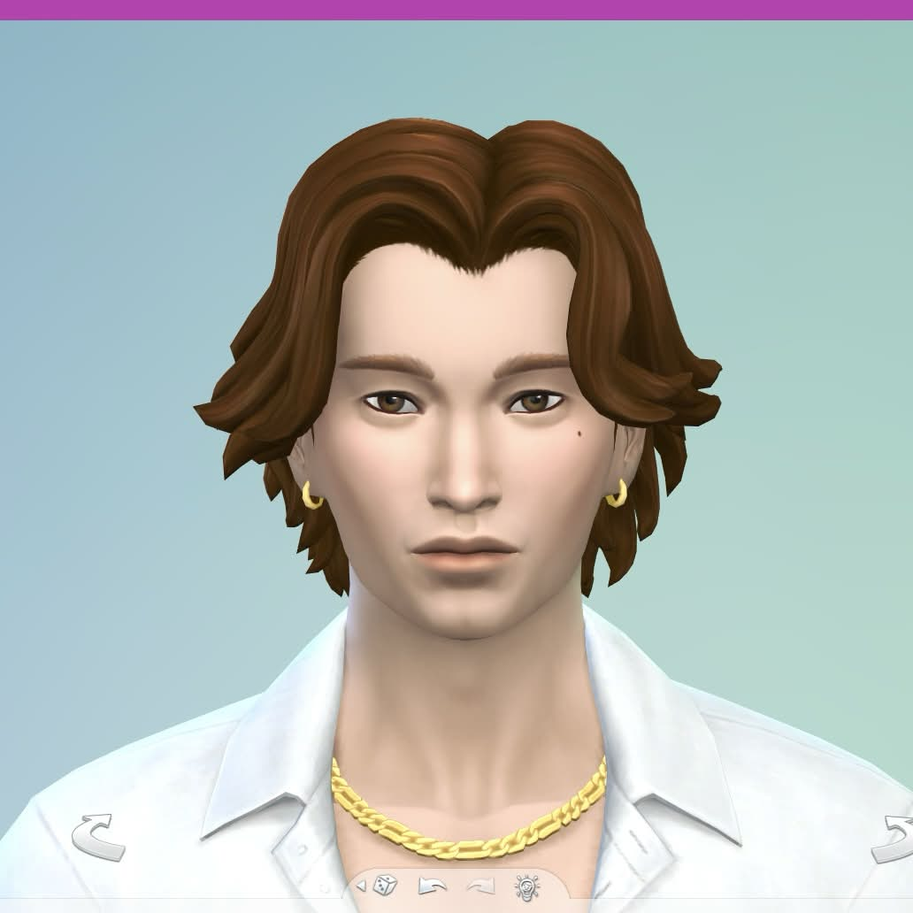
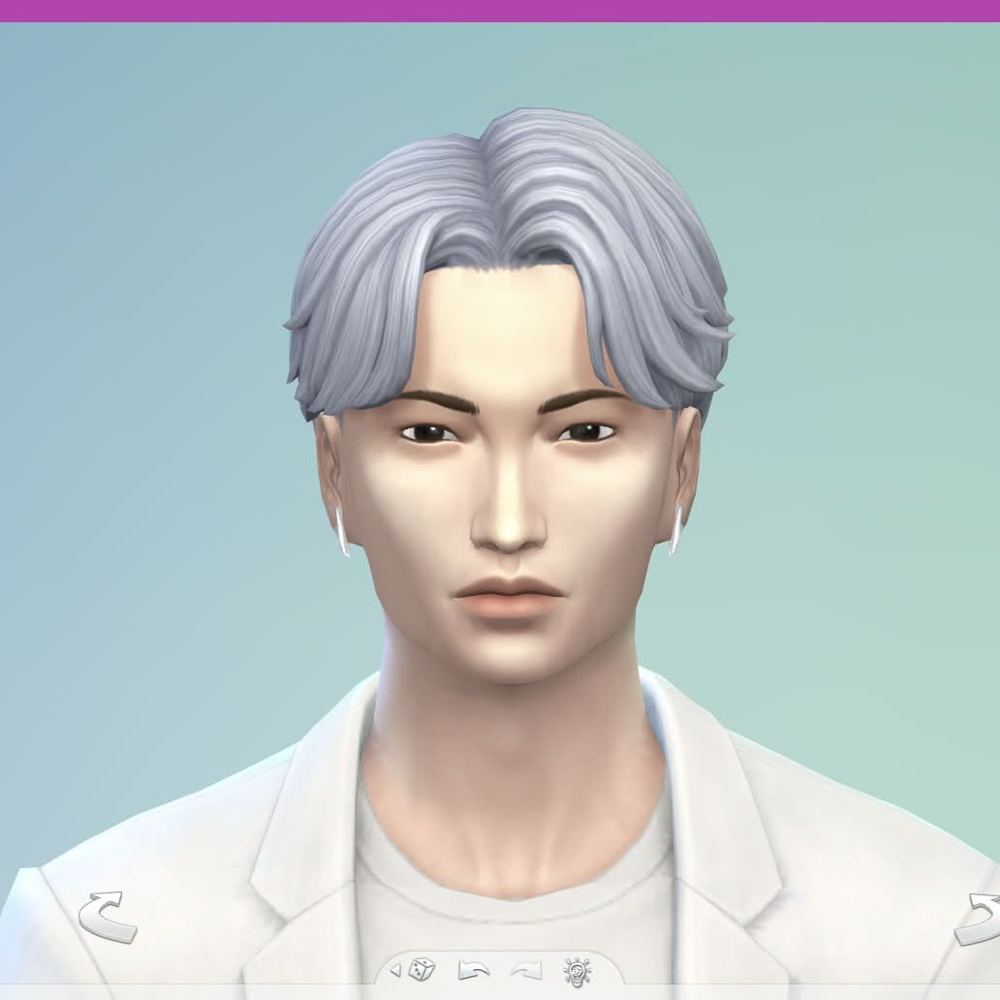
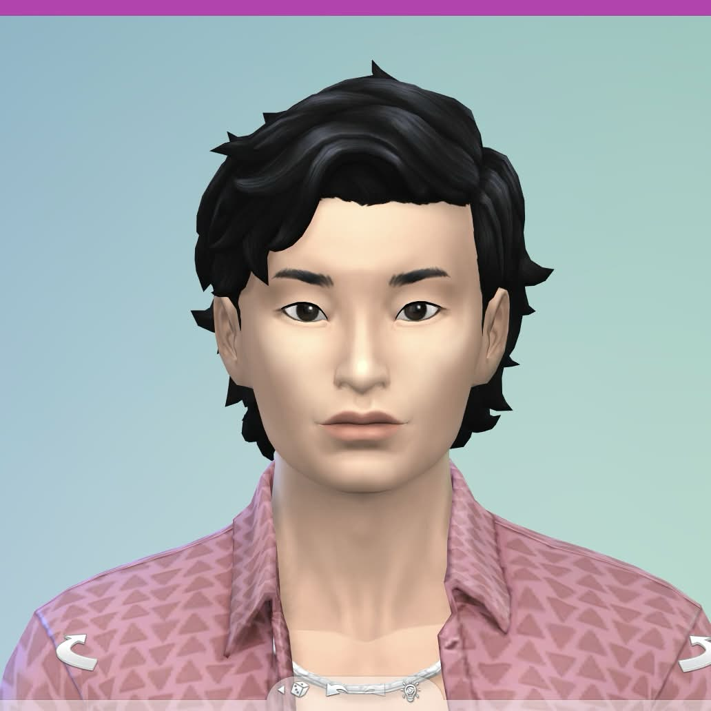
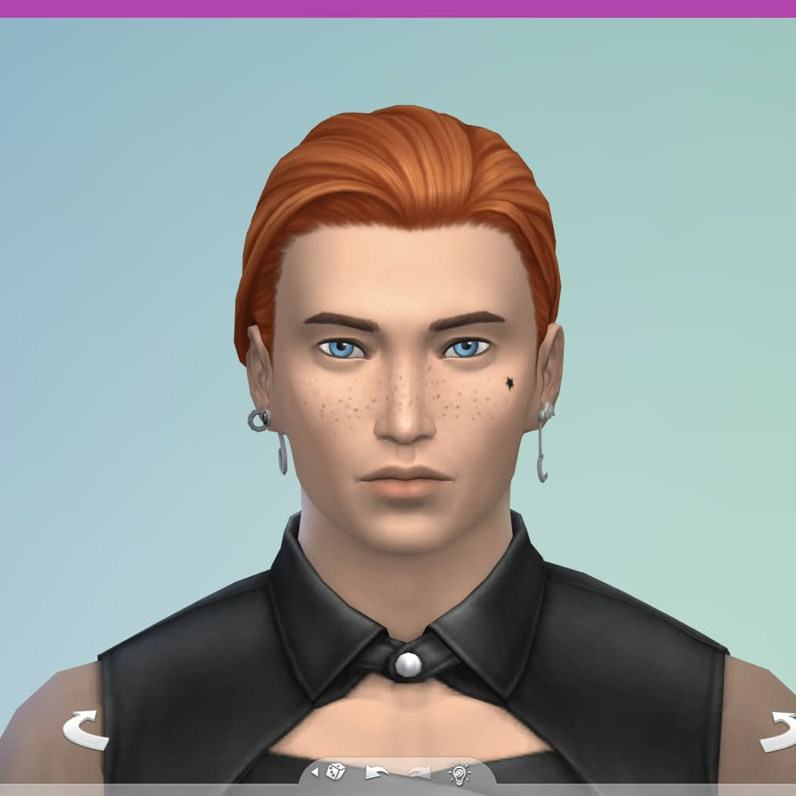
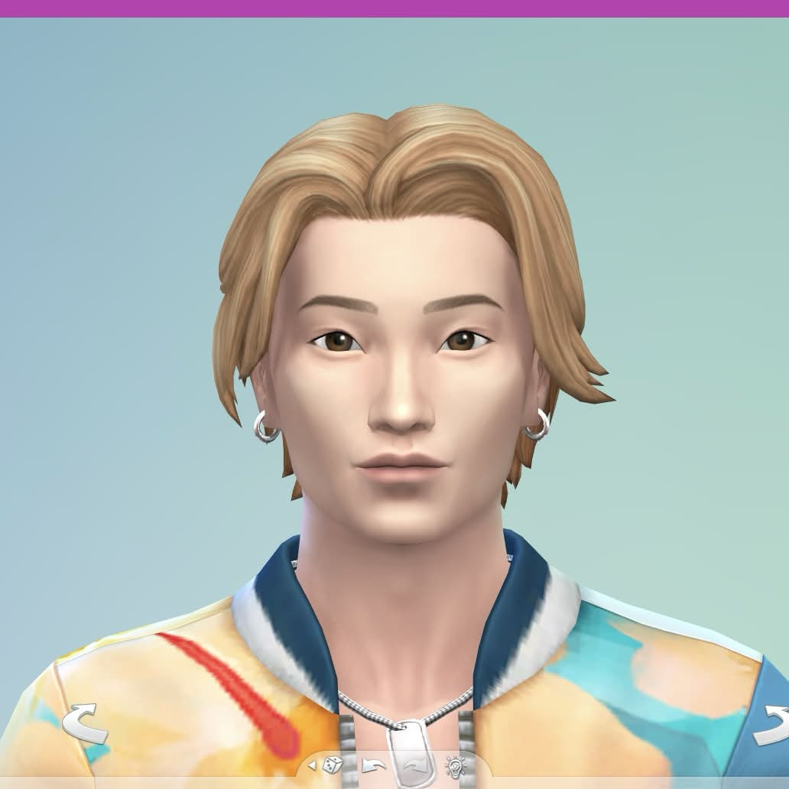
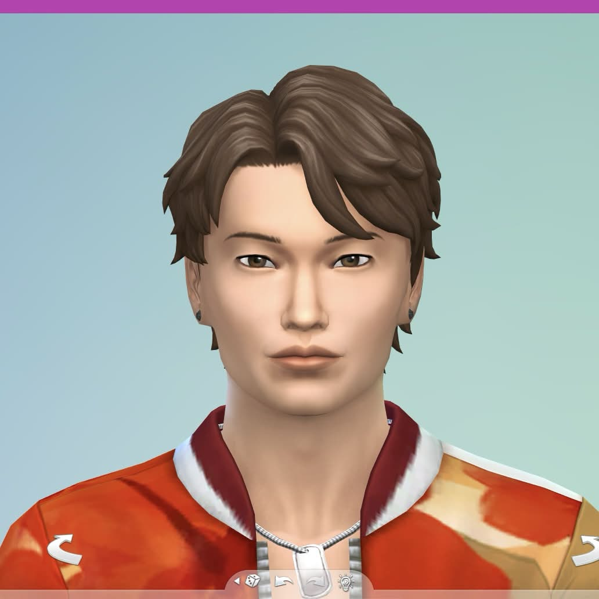
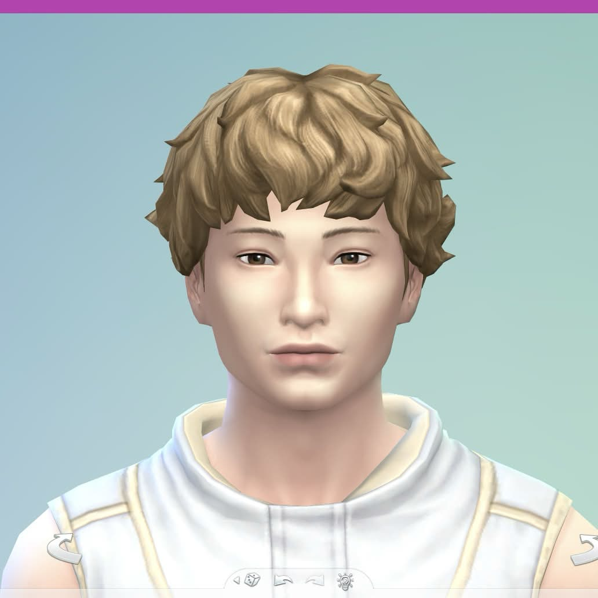

Hallyuwood Members Profile and Facts:

Hallyuwood (한류우드) is a K-Pop boy group under XL Entertainment. The group consists of 8 members: Michael, Shaun, Venti, Minyoung, Justin, Kevin, Golden Gate and Yeonsoo. Hallyuwood debuted on May 12th, 20XX with the mini album “City of Angels” and the title tracks 'Walk of Fame' and 'Shining Star'. The group was created through the survival show Hallyuwood Idol.
Hallyuwood Fandom Name: Starz
Hallyuwood Official Fan Colors: Pacific Coastal Wave and Redwood Blaze
Hallyuwood Current Dorm Arrangement:
Lower floor: Room 1: Shaun & Golden Gate, Room 2: Justin & Yeonsoo
Upper floor: Room 1: Michael & Minyoung, Room 2: Venti & Kevin
Official Accounts:
Instagram: @hallyuwood_xl
Twitter: @hallyuwood_xl
YouTube: Hallyuwood
Official Website: hallyuwood.xlent.com
VLive: Hallyuwood
Hallyuwood Members Profile:
Shaun

Stage Name: Shaun (션)
Birth Name: Shaun Lee
Position: Leader, Lead Rapper, Lead Dancer
Birthday: Hyung Line 2
Zodiac Sign: Libra
Height: 172 cm (5'8”)
Blood Type: O
Representative Emoji: 🐶
Shaun Facts:
- He was born in Los Angeles, California.
- He has an older brother named Eric and a younger sister named Katherine.
- His microphone color is Pacific Coastal Wave.
- Nicknames: Cutie Leader, LA Prince
- He looks up to Stray Kids' Bang Chan and SEVENTEEN's Woozi.
- His favorite color is blue.
- He has a college degree.
- Before joining Hallyuwood Idol, he worked as a barista.
- He has both a Korean and US driver's license.
- Shaun is afraid of bugs.
- He was voted the member with the most aegyo (BuzzFeedVideo Hallyuwood Plays Who's Who).
- He likes to work out with Justin.
Michael

Stage Name: Michael (마이글)
Korean Name: Park Min Seo (박민서)
English Name: Michael Park
Position: Lead Vocal, Lead Rapper, Lead Dancer
Birthday: Hyung Line 1
Zodiac Sign: Taurus
Height: 180 cm (5'11”)
Blood Type: A
Representative Emoji: 🍜
Michael Facts:
- He was born in San Francisco, California.
- His microphone color is lavender.
- Nicknames: Mom, Mikey
- His role models are his parents.
- Michael worked in craft services for XL Entertainment before joining Hallyuwood Idol.
- His favorite colors are purple and white.
- He said the member he is the closest to is Minyoung.
- He is considered the best cook in the group.
- Michael has recently started trying out photography.
Venti

Stage Name: Venti (벤티)
Birth Name: Byeon Joong Chan (변중찬)
English Name: Ben Byeon
Position: Main Vocal, Visual
Birthday: Middle Child 1
Zodiac Sign: Aries
Height: 183 cm (6')
Blood Type: AB
Representative Emoji: 👽
Venti Facts:
- He was born in Jinju, Gyeongsangnam-do, South Korea.
- He has a younger sister named Gwen who is a streamer.
- His microphone color is silver.
- Nicknames: Iced Caramel Macchiato, Ben Ten
- He is most inspired by Taeyeon and John Legend.
- His favorite colors are black and red.
- The member he is closest to is Justin.
- He has a pet dog named Poro.
- Venti loves to play video games and read comics.
- He is a big fan of Girls Generation and Twice.
Minyoung

Stage Name: Minyoung (민영)
Birth Name: Kwon Min Young (권민영)
English Name: Michael Kwon
Position: Main Vocal, Sub Rapper
Birthday: Middle Child 2
Zodiac Sign: Cancer
Height: 178 cm (5'10”)
Blood Type: A
Representative Emoji: 🐰
Minyoung Facts:
- He was born in Ilsan, Gyeonggi-do, South Korea.
- His microphone color is light pink.
- Nicknames: Michael 2, Scaredy Tokki
- His role model is Michael.
- His favorite color is pink.
- He moved to California when he was 15 to pursue his dream of being a star.
- Minyoung debuted as an actor in the Korean drama 'Level Up Love'. He played the role of Choi Sang Min, one of the main characters.
- The members say he is the most emotional.
- He never goes to bed without doing his 10-step skincare routine.
Justin

Stage Name: Justin (저스틴)
Birth Name: Justin Lee
Korean Name: Lee Yong San (이용산)
Position: Lead Rapper, Sub Vocal, Dancer, Visual
Birthday: Middle Child 3
Zodiac Sign: Leo
Height: 187 cm (6'1")
Blood Type: O
Representative Emoji: 🦭
Justin Facts:
- He was born in Seal Beach, California.
- He has an older sister named Jessica, who is a designer.
- His microphone color is Redwood Blaze.
- Nicknames: Tall Oppa, #1 Sexy
- He says that his role model is his sister because she is hardworking and creative.
- He doesn't have a favorite color because he likes all of them.
- His hobbies are cooking, fashion, playing video games, and working out.
- He likes to work out with Shaun.
- He learned how to surf when he was 7 years old.
Kevin

Stage Name: Kevin (케빈)
Birth Name: Kevin Kim
Korean Name: Kim Ki Won (김키원)
Position: Main Rapper, Dancer
Birthday: Maknae Line 1
Zodiac Sign: Capricorn
Height: 177 cm (5'10”)
Blood Type: B
Representative Emoji: 🦄
Kevin Facts:
- He was born in Folsom, California.
- He has a younger brother and a younger sister.
- His microphone color is emerald green.
- Nicknames: KK, Special K
- He is inspired by Kendrick Lamar and (G)I-DLE's Soyeon.
- His favorite color is brown.
- Kevin and Golden Gate met in high school.
- He posts his self-composed raps on SoundCloud under the name KK.
- He is afraid of most animals. (V Live XX0825)
- He knows how to drive.
- Kevin likes to paint his nails.
Golden Gate

Stage Name: GG / Golden Gate (골든게이트)
Korean Name: Choi Kyung Joo (최경주)
English Name: Joey Choi
Position: Main Rapper, Lead Dancer
Birthday: Maknae Line 2
Zodiac Sign: Gemini
Height: 179 cm (5'10")
Blood Type: B
Representative Emoji: 💃
Golden Gate Facts:
- He was born in Folsom, California.
- His microphone color is gold.
- Nicknames: GG, Troublemaker
- He looks up to EXO's Chanyeol and Kai, and SHINee 's Taemin.
- Golden Gate can solve a Rubik's cube in under one minute.
- His favorite colors are yellow and orange.
- He is currently studying mechanical engineering.
- Golden Gate and Kevin met in high school.
- The members say he is the most mischievous.
Yeonsoo

Stage Name: Yeonsoo (연수)
Birth Name: Kim Yeon Soo (김연수)
English Name: Jackie Kim
Position: Sub Vocal, Main Dancer, Center, Maknae
Birthday: Maknae Line 3
Zodiac Sign: Leo
Height: 175 cm (5'9”)
Blood Type: O
Representative Emoji: 😻
Yeonsoo Facts:
- He was born in Reno, Nevada.
- He has a brother who is 10 years younger than him.
- His microphone color is dark blue.
- Nicknames: Vegas, Angel Yeonsoo, Happy Virus
- His role models are SHINee's Taemin, Jackie Chan, and Venti.
- His favorite color is blue.
- Recently, he has been playing video games with Justin and Venti.
- His specialty is bboying.
- He has a black belt in taekwondo.
- Yeonsoo is close friends with 'Level Up Love' actor Kim Jae Woo.